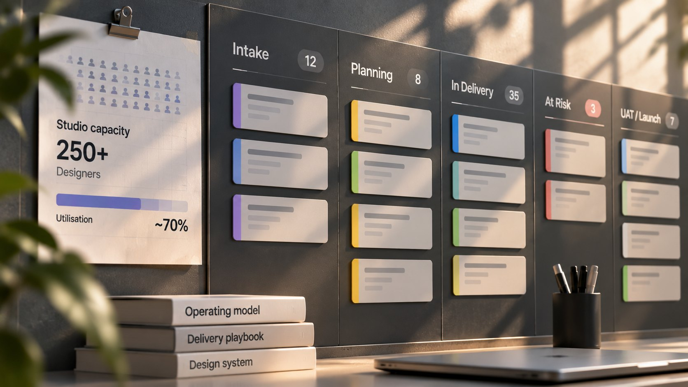

Operationalising a 250+ designer studio
Redesigning how a growing design organisation operates, delivers, and scales.

Outcomes
Operational efficiency
- Time to staff a confirmed project<1.5 days
~5 daysbefore - Billable utilisation~70%
~55%before - Unplanned project overruns4.7%
20.1%before - Portfolio schedule variance<5%
Untrackedbefore
AI-accelerated presales engine
- Project estimation~1 day
6–7 daysbefore - Proof of concept<5 days
2–3 weeksbefore
What moved the numbers
No single fix produced these results. They came from interconnected interventions across six areas, working together.
- 01
Demand and intake
One intake workflow and faster resource allocation. Earlier visibility into incoming demand enabled proactive staffing, more accurate sales estimates, and faster project mobilisation.
- 02
Scope and commercial control
Structured change control to bill out-of-scope work. Stronger roadmap governance and project planning accountability across PMs.
- 03
Risk and escalation
Earlier risk visibility through structured governance. Targeted recovery of 20+ escalated programs through re-baselining and stakeholder realignment.
- 04
Delivery flow
Cross-functional workflows to reduce handoff friction. Technical feasibility checkpoints to identify constraints early and reduce design rework.
- 05
AI-enabled workflows
Automated estimation, research synthesis, and repetitive production tasks. Interactive prototypes and reports replaced static deliverables, accelerating presales and freeing designers to focus on higher-value work.
- 06
People and consistency
Coaching and supporting 11 PMs. Standardised design workflows across centres, including Figma file organisation, shared knowledge, and repeatable practices.
Context
By 2024, Lollypop had grown into a large, multi-centre design organisation.
- 250+designers
- 7centres
- 35+concurrent programs
- 11project managers
But the operating model hadn’t kept pace with the scale.
Inside the studioExecution was fragmented
- Each department had its own processes.
- Work entered without clearly defined scope.
- Resource constraints surfaced late.
- Handoffs between design and engineering were fragmented.
- Project risks often escalated close to deadlines.
Outside the studioThe economics of design were changing
- Clients expected faster turnarounds.
- Presales timelines were becoming a competitive disadvantage.
- Designers spent considerable time on repetitive work surrounding design, rather than design itself.
The challenge was twofold: make delivery predictable at scale while fundamentally rethinking how design work gets done.
What I did
I approached this as an operating model redesign across three interconnected layers.
- 1How decisions get madePortfolio
Governance forums that connect operational signals to leadership decisions.
- 2How work flowsDelivery
Shared workflows connecting demand, staffing, and execution across seven centres.
- 3How design work gets doneAI transformation
Reengineered research, production, and presales with Design Leadership.
- +How change sticksEnablement
The adoption system underneath the AI layer: pilots, playbooks, and investment.
1Portfolio layer
Establishing governance and decision alignment
Fragmented conversations across Sales, Delivery, Finance, and Leadership were replaced with a structured decision-making rhythm. I organised existing meetings into purposeful governance forums.
- Monthly and quarterlyPortfolio visibility
Leadership reviews of utilisation, delivery performance, risks, and emerging constraints.
- FortnightlyCommercial alignment
Finance syncs on invoicing milestones, margins, and financial risks.
- WeeklyResource planning
Allocation and capacity reviews connecting incoming demand with design availability.
- Twice weeklyDelivery health
PM reviews to surface risks, blockers, and emerging slippage.
Focused sessions to diagnose troubled engagements, re-baseline plans, and realign stakeholders.
2Delivery layer
Standardising execution across the studio
I built shared workflows connecting demand, staffing, and execution across all seven centres.
- Demand
Unified intake and prioritisation
A single entry point for incoming work, improving visibility into demand and staffing requirements.
- Staffing
Capacity and utilisation
Forward-looking capacity planning and consolidated resource allocation.
- Control
Scope and risk management
Stronger change control, roadmap governance, and early risk identification.
- Execution
Design-to-development
Technical feasibility checkpoints and standardised handoff and QA practices to reduce downstream rework.
Read case study
Cross-centre consistency Common design workflows and Figma file governance across all seven centres.
3AI transformation layer
Reengineering design workflows with Design Leadership
In partnership with Design Leadership, I helped shape and operationalise how design work moved across discovery, research, production, and presales. Together, we mapped where designer time was being spent and identified opportunities to eliminate repetitive, non-design work through AI.
The principle was simple: AI handles the mechanical work; designers focus on judgment, creativity, and problem-solving.
Discovery and research
FromManually transcribing interviews, coding notes, and compiling findings into slide decks.
ToAI handles transcription, synthesis, and data processing, and findings are shared as interactive HTML reports. Researchers focus on interpreting patterns and validating insights.
Design production
FromDesigners manually producing wireframes, UI variations, component states, and prototypes through iterative, time-intensive workflows.
ToAI accelerates ideation and production, generating interface explorations, variants, states, and realistic content. Designers spend less time on repetitive execution and more on exploring directions, refining craft, and evaluating solutions. Interactive prototypes make it possible to test ideas and validate decisions earlier.
Presales
FromEstimates built from scratch and static presentations. Proofs of concept took 2–3 weeks to develop.
ToAI-assisted estimation gives design leads a structured baseline to refine, while rapid prototyping compresses POC development. Instead of relying on static decks to communicate an idea, prospects can interact with a working proof of concept, making the proposed solution more tangible during early-stage discussions.
POC turnaround: 2–3 weeks → under 5 days
+Enablement, supporting the AI layer
Building the infrastructure for adoption
Introducing AI workflows across a multi-centre organisation required more than tooling. It required a repeatable system for experimentation, learning, and adoption.
- 1
Pilot
Formed a cross-studio pilot team to validate workflows on live projects.
- 2
Codify
Documented successful practices into reusable playbooks.
- 3
Show
Ran cross-centre showcases demonstrating improvements in speed and output quality.
- 4
Invest
Built the business case for shared AI tooling and secured leadership investment.
- 5
Sustain
Established an enablement model that the pilot team could sustain independently.
What changed
FromFragmented, reactive execution
→ToA connected operating model where delivery, capacity, risk, and commercial performance were visible and actionable
OperationsDelivery became predictable
- ✓Resource allocation became proactive.
- ✓Risks surfaced earlier.
- ✓Finance and Delivery developed a shared understanding of operational and commercial constraints.
- ✓Teams across centres worked through consistent processes rather than individual conventions.
AIThe economics of delivery changed
- ✓Designers reclaimed time previously spent on repetitive tasks.
- ✓Research became more insight-led.
- ✓Deliverables became interactive.
- ✓Presales moved at the speed the market demanded.
Faster estimation and more compelling proofs of concept helped the studio remain competitive in a contracting market.
The larger shift
From managing a growing design organisation to redesigning the system through which it operates, delivers, and creates value.